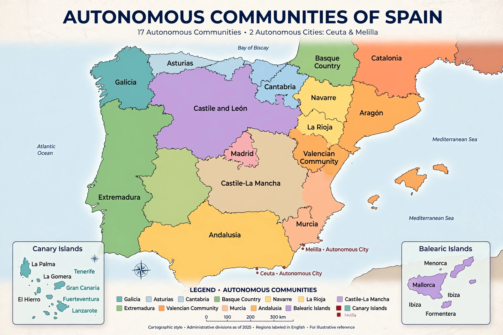

The autonomous communities (Spanish: comunidades autónomas) are the first-level political and administrative divisions of Spain, created by the Spanish Constitution of 1978 to guarantee limited autonomy to the nationalities and regions of the country. There are 17 autonomous communities and two autonomous cities, Ceuta and Melilla.

| Autonomous communities | |
|---|---|
| Number | 17 (+ 2 autonomous cities) |
| Largest | Andalusia (population), Castile and León (area) |
| Created | 1979–1983, under 1978 Constitution |
Andalusia, Aragon, Asturias, Balearic Islands, Basque Country, Canary Islands, Cantabria, Castile and León, Castilla-La Mancha, Catalonia, Extremadura, Galicia, La Rioja, Community of Madrid, Region of Murcia, Navarre, and Valencian Community. Several have co-official languages: Catalan in Catalonia, Balearics and Valencia (as Valencian), Basque in the Basque Country and Navarre, Galician in Galicia.
Each community has its own parliament, government, and statute of autonomy. Competences vary: education, health, culture, and in the Basque Country and Navarre, extensive tax powers under historic fueros. The system, nicknamed café para todos ('coffee for everyone'), evolved toward broad symmetry, though demands for greater autonomy — notably the Catalan independence movement — remain central to Spanish politics.
Spain · Catalonia · Basque Country
Recreated from memory.